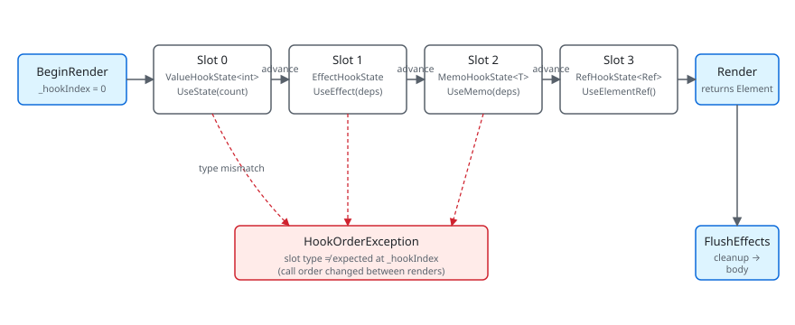

A hook in Microsoft.UI.Reactor (Reactor) is a position. When Render() runs, the framework
counts each hook call in order — UseState is slot 0, then UseEffect
is slot 1, then UseMemo is slot 2 — and stores whatever each hook
needs in a List<HookState> on the owning RenderContext. The next
render starts from _hookIndex = 0 again and walks the same list in
the same order. The slot at position 0 had better still be the one
UseState expects to find there, because the setter closure
UseState returned on the first render captured the literal index
0 and writes back to that slot when you call it. This is the entire
mechanical foundation of every hook rule you've ever read: "same hooks
in the same order every render" is the runtime invariant the slot
table enforces. Get it wrong — a conditional UseState inside an
if, a hook inside a loop whose iteration count changed — and the
type check on the slot throws HookOrderException because the slot
that used to hold ValueHookState<int> now sees a EffectHookState
asking for its bucket.
Hooks Internals¶
This page absorbs the legacy docs/reference/state-and-hooks.md and
sits underneath the surface-level Hooks reference. The
goal is one description of the storage shape behind every hook —
enough to debug a HookOrderException, predict whether UseState
returns a stable setter, and know when reaching for UseRef is
correct.
The slot table¶

| Slot type | Holds | Created by |
|---|---|---|
ValueHookState<T> |
Value, optional lock | UseState, UseReducer |
EffectHookState |
Deps, body, cleanup, pending flag | UseEffect |
MemoHookState<T> |
Deps, cached value | UseMemo, UseCallback, UseElementRef |
RefHookState<T> |
Mutable cell | UseRef |
ResourceHookState<T> |
Cache key, state, cleanup | UseResource, UseInfiniteResource |
ContextHookState |
Subscribed context keys | UseContext |
Each subsection below covers one row of that table and the contract its hook surface depends on.
RenderContext owns the table¶
public (T Value, Action<T> Set) UseState<T>(T initialValue, bool threadSafe = false)
{
if (_hookIndex >= _hooks.Count)
{
_hooks.Add(new ValueHookState<T>(initialValue, threadSafe));
}
var currentIndex = _hookIndex;
_hookIndex++;
if (_hooks[currentIndex] is not ValueHookState<T> hook)
throw new HookOrderException(
$"Hook at index {currentIndex} is {_hooks[currentIndex].GetType().Name}, expected ValueHookState<{typeof(T).Name}> (UseState). " +
"Hooks must be called in the same order every render.");
RenderContext holds the List<HookState> _hooks and an int
_hookIndex. BeginRender(requestRerender) sets _hookIndex = 0 and
captures the UI thread ID; the component's Render() runs, hooks
advance _hookIndex as they go, and after Render() returns the
reconciler reads _hooks to know which effects to flush. There is
one RenderContext per Component instance (and one per
RenderEachTime(ctx => …) function-component invocation — a function component gets its
own context, created at mount and preserved across the parent's re-renders
via positional matching, just like any other
element).
The slot-type check at the top of each hook is the runtime guard:
That check is the reason hook rules exist. A conditional hook
(if (cond) UseState(...)) advances the slot table on some renders
but not others, so a later hook in the same Render() reads a slot
holding a different state type, and the cast fails. The
REACTOR_HOOKS_001..007 analyzer family flags
the most common shapes at build time so the runtime check stays an
assertion of last resort.
UseState — the canonical slot¶
public (T Value, Action<T> Set) UseState<T>(T initialValue, bool threadSafe = false)
{
if (_hookIndex >= _hooks.Count)
{
_hooks.Add(new ValueHookState<T>(initialValue, threadSafe));
}
var currentIndex = _hookIndex;
_hookIndex++;
if (_hooks[currentIndex] is not ValueHookState<T> hook)
throw new HookOrderException(
$"Hook at index {currentIndex} is {_hooks[currentIndex].GetType().Name}, expected ValueHookState<{typeof(T).Name}> (UseState). " +
"Hooks must be called in the same order every render.");
UseState allocates a ValueHookState<T> on first render (`_hookIndex
= _hooks.Count
means "this slot doesn't exist yet"), capturescurrentIndex = _hookIndex, increments, and reads the value. The returned setter is a local functionSetterclosed overcurrentIndexand the context's_hooks` field — the index never changes for the lifetime of the component, which is why setter identity is stable across renders.
private Action<T> MakeStateSetter<T>(ValueHookState<T> h)
{
void Setter(T newValue)
{
bool changed;
if (h.ThreadSafe)
{
lock (h.Lock!)
{
changed = !EqualityComparer<T>.Default.Equals(h.Value, newValue);
if (changed) h.Value = newValue;
}
if (Diagnostics.ReactorEventSource.Log.IsEnabled(
global::System.Diagnostics.Tracing.EventLevel.Verbose,
Diagnostics.ReactorEventSource.Keywords.State))
Diagnostics.ReactorEventSource.Log.StateChange("UseState", typeof(T).Name, changed);
if (changed) _requestRerender?.Invoke();
}
else
{
if (MarshalIfOffUIThread("UseState", () => Setter(newValue))) return;
changed = !EqualityComparer<T>.Default.Equals(h.Value, newValue);
if (changed) h.Value = newValue;
if (Diagnostics.ReactorEventSource.Log.IsEnabled(
global::System.Diagnostics.Tracing.EventLevel.Verbose,
Diagnostics.ReactorEventSource.Keywords.State))
Diagnostics.ReactorEventSource.Log.StateChange("UseState", typeof(T).Name, changed);
if (changed) _requestRerender?.Invoke();
}
}
return Setter;
}
The setter is also where the auto-marshal, the equality check, and
the rerender request live. Calling it on a background thread takes
the MarshalIfOffUIThread branch and re-enqueues the setter on the
UI dispatcher; calling it from the UI thread runs the body inline.
Either way, the slot is written with the new value, an ETW
StateChange event fires if state-keyword tracing is enabled, and
_requestRerender triggers the host to render again on the next
dispatcher tick. The reactivity contract — equality short-circuit,
single signal — is described end-to-end on the Reactivity
Model page; the implementation lives here.
Caveat: The setter's closure captures the
currentIndexvalue, not thehookIndexvariable. That means it points at slot N forever, even if a future render adds hooks before it — adding a hook before this one shifts every subsequent slot's intended type, and the next render will throwHookOrderExceptionfrom the type cast. There's no recovery path; the component has to be unmounted (or the source fixed and hot-reload triggered, which remounts).
UseEffect — the slot that runs later¶
public void UseEffect(Action effect, params object[] dependencies)
{
var hook = AcquireEffectSlot();
// Snapshot the deps on store (SnapshotDeps): a caller can pass — and then
// reuse and mutate in place — the same array instance across renders, so the
// stored copy must be isolated or DepsEqual would alias prev/next and skip a
// real change (Issue #659 review #3). Only the deps-CHANGED path stores, so
// this adds no steady-state allocation.
if (hook.Dependencies is null || !DepsEqual(hook.Dependencies, dependencies))
ScheduleEffect(hook, effect, null, SnapshotDeps(dependencies));
}
UseEffect doesn't run the body during Render(). It allocates an
EffectHookState if needed, compares the dependencies against the
previous render's deps (DepsEqual uses object.Equals element-wise),
and if they differ — or if this is the first render — it stashes the
old cleanup as PendingCleanup, replaces the deps and body, and
flips Pending = true. The reconciler calls FlushEffectsTraced
after commit; flush runs all PendingCleanup callbacks first, then
all Effect bodies, both in slot order.
The cleanup-before-body ordering is load-bearing: a cts.Cancel() /
timer.Dispose() cleanup actually disposes the previous timer
before the new body creates a new one. The
Effects Scheduling page covers the timing
contract; this is the slot-shape that implements it.
The reason UseEffect(body, deps) returns nothing and the cleanup
mechanism uses a closure-returned Func<Action> (the overload
UseEffect(Func<Action>)) is to avoid eagerly walking through every
hook's "what if this cleans up" plumbing. Effects that need cleanup
opt in by returning an action; the slot holds a null cleanup
otherwise.
UseMemo — the cached-value slot¶
public static ElementRef<T> UseElementRef<T>(this RenderContext ctx)
where T : FrameworkElement
{
if (ctx is null) throw new ArgumentNullException(nameof(ctx));
// UseMemo with empty deps allocates the typed+inner ref on the first
// render only; subsequent renders return the cached instance. Using
// UseState here would eagerly evaluate `new ElementRef<T>(new ElementRef())`
// on every render and throw the result away (UseState only consults
// the initial value on first call), which would defeat the point of a
// cheap stable ref hook.
return ctx.UseMemo(static () => new ElementRef<T>(new ElementRef()), Array.Empty<object>());
}
UseMemo<T>(factory, deps) allocates a MemoHookState<T> and stores
the computed value plus the deps it was computed against. Subsequent
renders compare deps; on miss, run the factory and store; on hit,
return the cached value. The factory is not an effect — it runs
inside Render(), on the render path, so it must be pure (no
setters, no side effects).
UseElementRef is the canonical example of building a hook out of
UseMemo with empty deps. The static lambda () => new ElementRef<T>(new ElementRef())
runs on the first render only; every subsequent render returns the
same ElementRef<T> instance. Storing the ref in UseState would
re-allocate on every render and throw the result away — UseState's
initial value is consulted only on first call, but the allocation
happens unconditionally.
This is the general pattern for custom hooks. Compose existing hooks
inside a regular method; the slot table doesn't care whether the
hook call comes from the component's Render() directly or from a
helper called by Render(), as long as call order is stable.
UseRef — the mutable cell¶
UseRef<T>(initial) allocates a RefHookState<T> holding a Ref<T>
wrapper. The wrapper exposes Value as a get/set property; mutating
it does not schedule a re-render — that's the entire point.
Reach for UseRef when you need a value that persists across renders
but the UI doesn't depend on it: a counter you log, a debounce
timer ID, the previous value of a state cell, a stable target for an
external library that wants a long-lived reference.
var renderCount = UseRef(0);
renderCount.Value++; // does NOT re-render
var prev = UseRef("");
UseEffect(() => { prev.Value = name; }, name);
If you find yourself wanting UseRef to trigger re-renders, you
probably want UseState instead. UseRef's value is an escape hatch
for state that shouldn't drive UI.
UseObservable, UseExternalStore, UseResource, UseContext¶
public sealed class PendingScope
{
private readonly Dictionary<object, bool> _loadingByToken = new(capacity: 4);
private readonly object _lock = new();
/// <summary>Fires when a resource joins, leaves, or changes its loading state.</summary>
public event Action? Changed;
/// <summary>
/// Start tracking <paramref name="token"/> with the given initial <paramref name="isLoading"/>
/// state. A hook typically uses its own <c>this</c>-equivalent as the token.
/// </summary>
public void Register(object token, bool isLoading)
{
lock (_lock) _loadingByToken[token] = isLoading;
Changed?.Invoke();
}
UseObservable<T> subscribes the current component to an
INotifyPropertyChanged source. Internally it builds an effect that
attaches PropertyChanged += ... and stores the latest value in a
local UseState. Cleanup unsubscribes.
UseExternalStore<TSnapshot> follows the same ownership model for non-INPC
stores that expose subscribe plus getSnapshot. The hook reads the snapshot
during render, keeps the latest getter and comparer in a stable ref-backed cell,
and installs one effect-owned subscription. Each change notification re-reads
the snapshot and only schedules a re-render when the comparer reports a real
change.
UseResource<T> (and UseInfiniteResource, UseMutation) walks a
fuller slot shape — a ResourceHookState<T> carrying the cache key,
the latest value, the in-flight cancellation token, and a registration
with the nearest PendingScope
ancestor. The async-resource hooks are documented end-to-end in the
async-system reference; the slot is
the same shape category — a thing the component renders against, with
cleanup that releases external state on unmount.
UseContext<T> reads from the Context value the
nearest ancestor pushed via a .With(...) modifier. The slot holds
the subscription so a change to the context value (via the publishing
parent's re-render) marks the consuming component dirty.
Function components¶
public abstract class Component
{
// Settable so the reconciler can transfer a live RenderContext (hooks +
// cleanups) onto a freshly-constructed instance when a Hot Reload edit
// mints a new component Type token (spec 049 §7 subtree migration). Outside
// that path the value is the per-instance context created here.
internal RenderContext Context { get; set; } = new();
/// <summary>
/// Override to describe the UI. Use UseState, UseEffect, etc. from the context.
/// Must call hooks in the same order every render.
/// </summary>
public abstract Element Render();
/// <summary>
/// Controls whether this propless component should re-render when its parent re-renders.
/// Default: false — propless components only re-render from their own state changes or context changes.
/// Override and return true to always re-render when the parent re-renders.
/// </summary>
protected internal virtual bool ShouldUpdate() => false;
Memo(ctx => Render(ctx)) materializes as a function-component
element. The reconciler treats it like any other component — element
record on the tree, mounted into a slot in the parent — but the
"component instance" is an internal wrapper holding its own
RenderContext. The wrapper instance is keyed by position in the
parent's render output (or by .WithKey(...) if set), so its hook
state persists across the parent's re-renders the same way a class
MyComponent : Component would.
The implication is that hooks called inside the ctx => ... lambda
must follow the same rules as hooks in a class component's
Render(). The lint and analyzer rules don't distinguish: same call
order, no conditionals, no varying-count loops.
Patterns¶
Building a custom hook¶
A custom hook is a regular method that calls existing hooks. The
slot table doesn't care; only call order matters. The convention is
the Use prefix so the analyzer can apply hook-rules at the call
site:
public static (string Value, Action<string> Set) UseDebouncedText(
this RenderContext ctx, string initial, TimeSpan delay)
{
var (value, setValue) = ctx.UseState(initial);
var (debounced, setDebounced) = ctx.UseState(initial);
ctx.UseEffect(() =>
{
var cts = new CancellationTokenSource();
_ = Task.Delay(delay, cts.Token).ContinueWith(
_ => setDebounced(value),
TaskContinuationOptions.OnlyOnRanToCompletion);
return () => cts.Cancel();
}, value);
return (debounced, setValue);
}
public static ElementRef<T> UseElementRef<T>(this RenderContext ctx)
where T : FrameworkElement
{
if (ctx is null) throw new ArgumentNullException(nameof(ctx));
// UseMemo with empty deps allocates the typed+inner ref on the first
// render only; subsequent renders return the cached instance. Using
// UseState here would eagerly evaluate `new ElementRef<T>(new ElementRef())`
// on every render and throw the result away (UseState only consults
// the initial value on first call), which would defeat the point of a
// cheap stable ref hook.
return ctx.UseMemo(static () => new ElementRef<T>(new ElementRef()), Array.Empty<object>());
}
Every call to UseDebouncedText consumes three slots
(UseState, UseState, UseEffect). Calling it conditionally
breaks the same way an inline conditional UseState would.
Reading the previous value of a state¶
UseRef plus UseEffect gives you the previous render's value:
var (count, setCount) = UseState(0);
var prevCount = UseRef(0);
var previous = prevCount.Value;
UseEffect(() => { prevCount.Value = count; }, count);
previous carries the value count had before the most recent
update. The mutation inside the effect doesn't re-render; the next
render reads the new value via the Ref<T> cell.
Common Mistakes¶
Conditional hook¶
// Don't:
public override Element Render()
{
if (showCounter)
{
var (count, setCount) = UseState(0); // slot count varies per render
return Button($"{count}", () => setCount(count + 1));
}
return Text("hidden");
}
public (T Value, Action<T> Set) UseState<T>(T initialValue, bool threadSafe = false)
{
if (_hookIndex >= _hooks.Count)
{
_hooks.Add(new ValueHookState<T>(initialValue, threadSafe));
}
var currentIndex = _hookIndex;
_hookIndex++;
if (_hooks[currentIndex] is not ValueHookState<T> hook)
throw new HookOrderException(
$"Hook at index {currentIndex} is {_hooks[currentIndex].GetType().Name}, expected ValueHookState<{typeof(T).Name}> (UseState). " +
"Hooks must be called in the same order every render.");
When showCounter flips from true to false, slot 0 (which had been
ValueHookState<int>) is gone from the slot table on that render —
or rather, the slot-table position 0 is now whatever hook the next
Render() happens to call first. The runtime check throws
HookOrderException on the first hook whose slot type no longer
matches. Hoist the UseState to unconditional, branch on the value
inside the returned tree:
var (count, setCount) = UseState(0);
return showCounter ? Button($"{count}", () => setCount(count + 1)) : Text("hidden");
Tips¶
HookOrderException is a structural error. Read the message,
find the hook whose slot type the runtime saw — that hook's call
site is where the slot table went out of sync. Often the actual
offender is an earlier hook that ran on one render and not on
another; the visible failure is downstream.
Custom hooks don't need framework cooperation. Any extension
method on RenderContext (or Component) that calls existing hooks
is a hook. The Use prefix is convention plus what the
analyzer recognizes; the framework itself
treats hook calls uniformly.
Setters and refs are identity-stable. Setter closures, Ref<T>
instances from UseRef, and the ElementRef<T> from UseElementRef
all return the same instance across renders. Pass them as effect
dependencies safely; they won't trigger a restart.
UseMemo runs during render — it is not a deferred computation.
If the factory does I/O, sleeps, or sets state, you wrote an effect
by mistake. Move it to UseEffect.
Next Steps¶
- Hooks — Previous: the public hook surface.
- Reactivity Model — Why the setter is the signal.
- Effects Scheduling — Next: the FlushEffects pass after reconcile.
- Architecture Overview — The full render loop.
- Rules of Reactor — The lint-enforced hook-call-order rules.